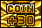
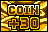

After the 25th set, the order resets to here.
There are 25 distinct sets of slots that the slots option can give the player. The player will progress through all sets in order each time they play the slots. After the 25th time, the next set the player receives is set 11, and future slot plays continue from 11. The following table lists the 25 sets.
Any instance of Evo Mode will be replaced by Catch'em Mode if the player has not caught any Pokémon. Any instance of Pikachu will be replaced with Ball Upgrade if the player already has the Pikachu saver.
While on the Ruins map, Jirachi Arrival will be added to every slot set.
| Set | Options | Notes | |
|---|---|---|---|
| 1 |
|
Small Bonus, Ball Saver (30 seconds), Bonus Multiplier, 10 Coins, Ball Saver (30 seconds), Pikachu | |
| 2 |
|
Small Bonus, Ball Saver (30 seconds), Bonus Multiplier, 10 Coins, Ball Saver (30 seconds), Catch'em Mode | |
| 3 |

|
Small Bonus, Ball Saver (30 seconds), Big Bonus, 30 Coins, Ball Saver (30 seconds), Pikachu | |
| 4 |
|
Small Bonus, Timer Bonus (30 seconds), Bonus Multiplier, 10 Coins, Ball Saver (30 seconds), Evo Mode | |
| 5 |
|
10 Coins, Ball Saver (60 seconds), Big Bonus, 30 Coins, Bonus Stage, Big Bonus | |
| 6 |
|
Small Bonus, Ball Saver (30 seconds), Big Bonus, 10 Coins, Ball Saver (30 seconds), Pikachu | |
| 7 |
|
Small Bonus, Ball Saver (60 seconds), Timer Bonus (30 seconds), Ball Upgrade, Ball Saver (30 seconds), Catch'em Mode | |
| 8 |
|
Small Bonus, Ball Saver (30 seconds), Bonus Multiplier, Big Bonus, 30 Coins, Pikachu | |
| 9 |
|
Small Bonus, Timer Bonus (30 seconds), Bonus Multiplier, 50 Coins, Ball Saver (30 seconds), Evo Mode | |
| 10 |
|
Big Bonus, Ball Upgrade (Max), Ball Saver (60 seconds), Big Bonus, 30 Coins, Bonus Stage | |
| 11 |
|
Small Bonus, Ball Saver (30 seconds), Big Bonus, 10 Coins, Ball Saver (30 seconds), Pikachu | The same options as set 6. After the 25th set, the order resets to here. |
| 12 |
|
Small Bonus, Ball Saver (90 seconds), Bonus Multiplier, Ball Upgrade, 10 Coins, Catch'em Mode | |
| 13 |
|
Small Bonus, Ball Saver (30 seconds), Big Bonus, 30 Coins, Ball Saver (30 seconds), Pikachu | The same options as set 3. |
| 14 |
|
Small Bonus, 10 Coins, Bonus Multiplier, 10 Coins, Ball Saver (30 seconds), Evo Mode | |
| 15 |
|
Big Bonus, Ball Saver (90 seconds), Bonus Stage, Timer Bonus (30 seconds), Ball Upgrade, Bonus Stage | |
| 16 |
|
Small Bonus, Ball Saver (30 seconds), Bonus Multiplier, 10 Coins, Ball Saver (30 seconds), Pikachu | The same options as set 1. |
| 17 |
|
Small Bonus, Ball Saver (30 seconds), Bonus Multiplier, Ball Upgrade, 10 Coins, Catch'em Mode | |
| 18 |
|
Small Bonus, Ball Saver (30 seconds), Big Bonus, 30 Coins, Ball Saver (30 seconds), Pikachu | The same options as sets 3 and 13. |
| 19 |
|
Small Bonus, Ball Saver (90 seconds), Bonus Multiplier, 10 Coins, Timer Bonus (30 seconds), Evo Mode | |
| 20 |
|
Big Bonus, Ball Upgrade (Max), Ball Saver (60 seconds), Big Bonus, 50 Coins, Bonus Stage | |
| 21 |
|
Small Bonus, Ball Saver (30 seconds), Big Bonus, 10 Coins, Ball Saver (30 seconds), Pikachu | The same options as sets 6 and 11. |
| 22 |
|
Small Bonus, Ball Saver (90 seconds), Bonus Multiplier, Ball Upgrade, 10 Coins, Catch'em Mode | The same options as set 12. |
| 23 |
|
Small Bonus, Ball Saver (30 seconds), Big Bonus, 30 Coins, Ball Saver (30 seconds), Pikachu | The same options as sets 3, 13, and 18. |
| 24 |
|
Small Bonus, Timer Bonus (30 seconds), Bonus Multiplier, 10 Coins, Ball Saver (30 seconds), Evo Mode | The same options as set 4. |
| 25 |
|
Bonus Stage, Ball Upgrade, Ball Saver (90 seconds), Big Bonus, 50 Coins, Extra Ball | |